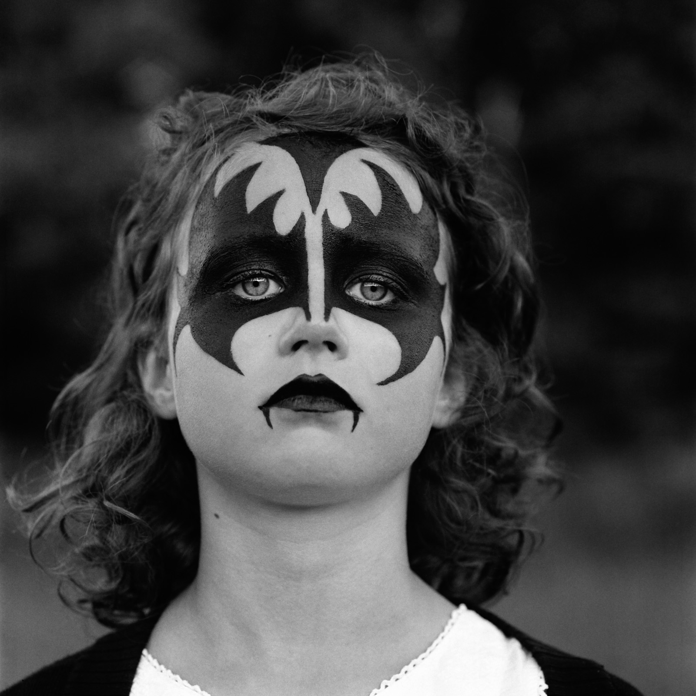
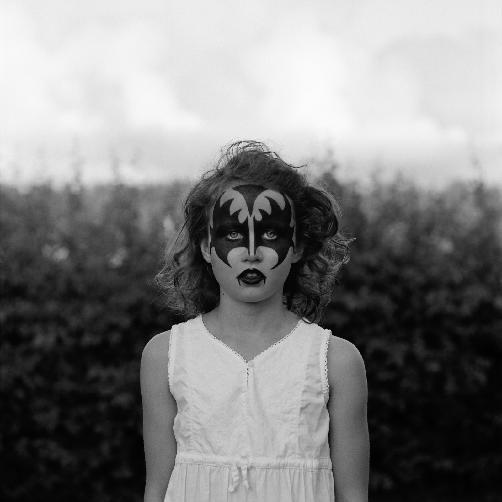
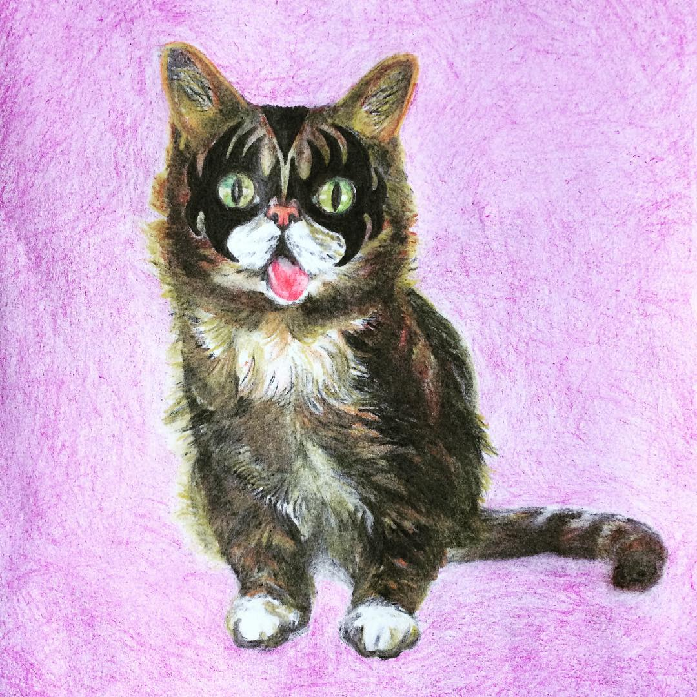
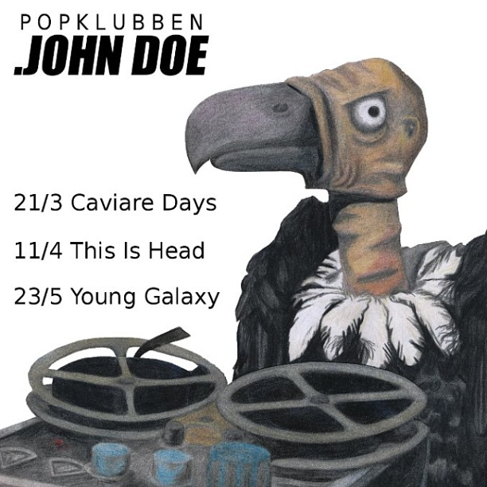

Här nedanför kan man se några av projekten jag har gjort under utbildningen:
Jag älskar att måla och allt annat kreativt, jag har hjälp många vänner med små kreativa
projekt. Man kan se
några här nedanför:



